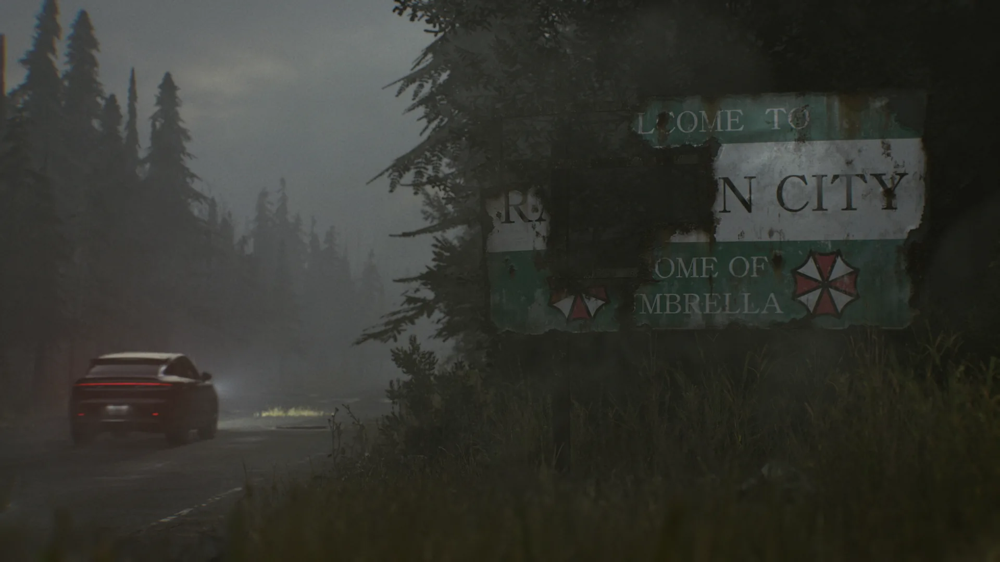
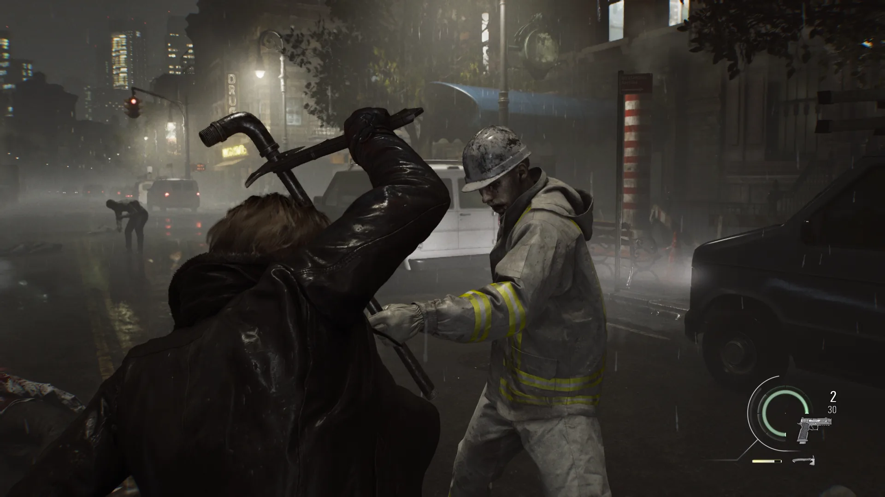
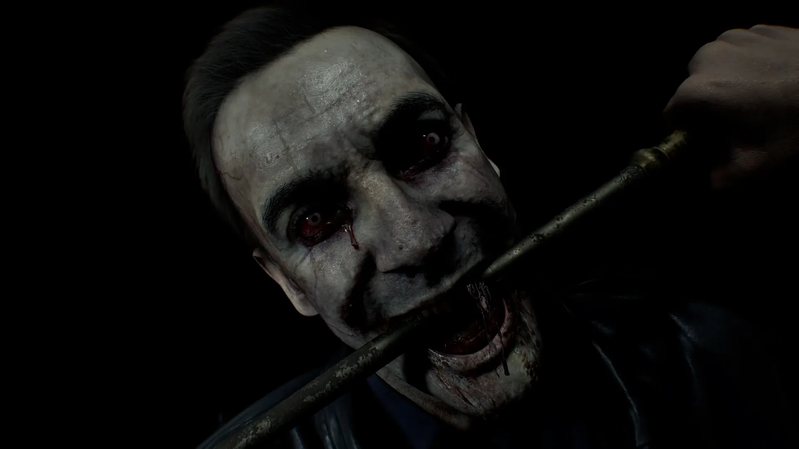
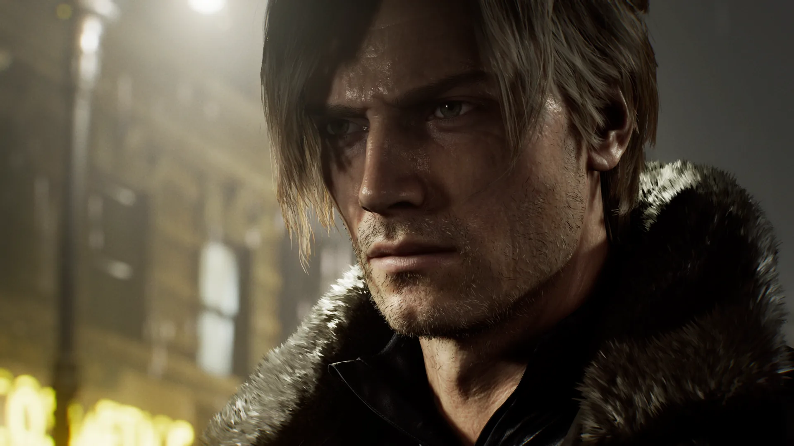
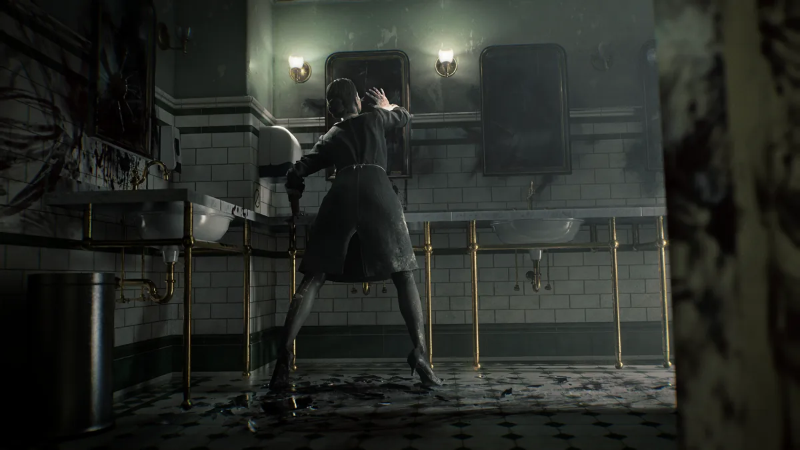
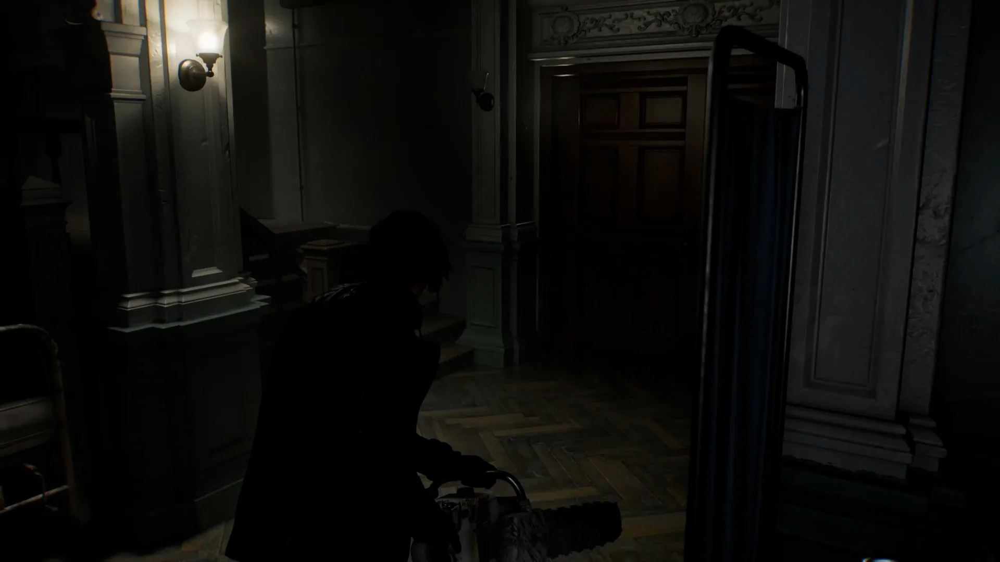
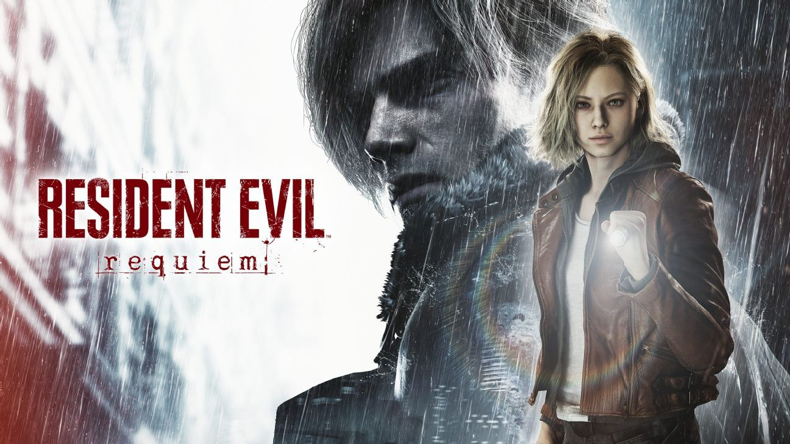
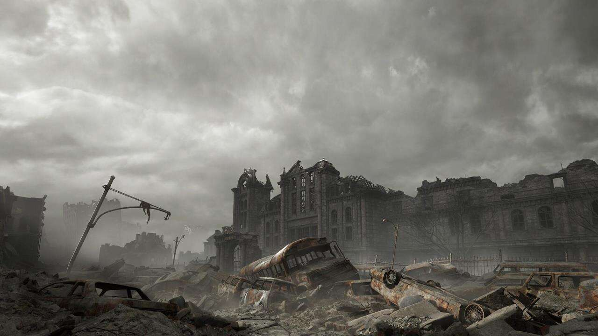

Resident Evil Requiem: Un homenaje a casi 30 años de horror
Con Resident Evil Requiem, Capcom logra lo que parecía imposible: unificar todas las eras de su franquicia estrella en una sola experiencia cohesiva.
EEl noveno título numerado de la saga de survival horror Resident Evil no es solo un juego más en la cronología; sino una entrega que no refleja más que respeto para los fans que hemos estado ahí desde 1996, cuando el equipo dirigido por Shinji Mikami creó el primer capítulo para PlayStation, hace casi 30 años.
Requiem no es solo un juego innovador con un detalle gráfico que te quita el aliento; es una experiencia que te obliga a enfrentar los fantasmas de una historia que creíamos cerrada y que comenzó con Oswell E. Spencer, Edward Ashford y James Marcus.
Desde el primer minuto, queda claro que este no es un viaje cualquiera. La atmósfera es tan densa que se siente casi física, especialmente cuando el juego nos transporta de vuelta a las ruinas de Raccoon City.
Ver la ciudad que lo empezó todo reducida a cenizas y recuerdos bajo la tecnología actual no es solo un golpe de nostalgia; es una declaración de intenciones por parte de un equipo de desarrollo que volcó su dedicación y su respeto por los fans en cada milímetro del escenario. Aquí, el horror no solo se ve, sino que se siente en cada enemigo que te acecha en las sombras.

Las sombras de Umbrella
La narrativa es, sin duda, uno de los pilares más sólidos de esta entrega. La historia resulta fascinante al revelar detalles cruciales que profundizan en la historia que comenzó con los fundadores de Umbrella.
Para quienes hemos seguido el lore de la saga, estas revelaciones son el tejido conectivo que faltaba para comprender la magnitud de la tragedia biológica desde su origen.
Este peso argumental se siente especialmente vivo cuando nos enfrentamos al emblemático regreso a las ruinas de Raccoon City, un viaje de nostalgia pura que, con la potencia del PlayStation 5 Pro, resulta más aterrador y vívido que nunca.

Gráficos de otro nivel
El detalle gráfico de Requiem roza lo irreal: desde el sudor en la frente de los protagonistas y las arrugas en el rostro de Leon, hasta la forma en que la sangre se riega en combate.
Cada textura y manejo de la luz, desde las paredes en las instalaciones del Rhodes Hill Chronic Care Center hasta la iluminación dinámica que juega con nuestra mente, demuestra una dedicación absoluta por parte de los desarrolladores.

Horror en español latino
Antes de entrar en las mecánicas, hay que celebrar un hito histórico para nuestra región. Por primera vez en la historia de la franquicia, Leon S. Kennedy tiene voz oficial en español latino (en simultáneo con el lanzamiento del juego) a cargo del mexicano Gerardo García, al igual que Grace, interpretada por Susana Moreno.
Gerardo Garcia.
Susana Moreno.
Además, el juego en su totalidad cuenta con voces en nuestro idioma, destacando un trabajo de localización impecable que nos permite sumergirnos en el horror sin barreras. Es un detalle que los fans en Latinoamérica esperábamos desde hace décadas y que Capcom finalmente ha hecho realidad, con una calidad de la actuación de voz sobresaliente.

Dos caras de la misma moneda
En cuanto a la jugabilidad, el título nos ofrece una dualidad magistral a través de sus protagonistas, entregando dos experiencias que se complementan, pero se sienten radicalmente distintas.
Al tomar el control de Leon S. Kennedy, el título se convierte en un festín de acción, disparos y movimientos espectaculares. Es el Leon que amamos y conocemos: capaz, ágil y listo para enfrentar hordas de enemigos con estilo, permitiéndonos ejecutar movimientos espectaculares que nos hacen sentir en control de la situación.
Por el contrario, las secciones con Grace representan el survival horror en su estado más puro. Con ella, el ambiente se vuelve tenso y claustrofóbico; la gestión de recursos resulta vital y el sigilo es tu única herramienta real de supervivencia.
Al ser una analista del FBI, con menor experiencia en el campo que Leon, con Grace te verás obligado a decidir si vale la pena gastar tu munición y disparar esa última bala o si lo mejor es escabullirte con sigilo y huir para sobrevivir un minuto más.
Al jugarlo, opté por respetar el diseño original, así que experimenté la aventura con Leon en tercera persona y la tensión con Grace en primera persona, lo que contribuyó a preservar la forma en que Requiem fue concebido.
Sin embargo, los modos de vista en primera o tercera persona se pueden cambiar en cualquier momento para ambos personajes, permitiéndote disfrutarlo de la manera en la que te sientas más cómodo.

Resident Evil Requiem - Gameplay
En cuanto a los desafíos y trofeos, son muchos y variados, lo que le da una gran rejugabilidad para obtenerlos todos.
La gestión de espacio es otro de los clásicos que conserva Requiem. Este apartado es más limitado para Grace, al igual que la variedad de armas. Sin embargo, puedes ampliar el espacio con riñoneras que irás encontrando a lo largo del juego o emplear el viejo y conocido baúl.
Leon dispone de más espacio de almacenamiento y de una mayor variedad de armamento que puedes mejorar, aunque no puede utilizar baúles, por lo que deberás decidir si quieres conservar todas tus armas o vender algunas.

Enemigos que no dan tregua
El diseño de enemigos y las mecánicas de juego son una amalgama de los mejores momentos de la franquicia. El gameplay evoca la estructura de Resident Evil 2, pero integra la verticalidad de Resident Evil 4 y la atmósfera opresiva de Resident Evil 7. Aquí nos enfrentaremos a zombis que no han perdido la conciencia del todo, lo que genera una atmósfera perturbadora cuando los ves ocupados en tareas cotidianas que solían hacer cuando eran humanos, como limpiar, cocinar e incluso cantar.
Además, aquí te enfrentarás a criaturas y armas biológicas rápidas como los Blister Heads y otros monstruos que nos recordarán a viejos conocidos.
Para elevar la tensión, regresan los enemigos inmensos tipo Stalker, que nos perseguirán incansablemente en zonas específicas de la partida, obligándonos a estar en constante movimiento.



Pros
- El contraste entre la acción de Leon y el survival horror de Grace mantiene el ritmo fresco durante todo el juego.
- El nivel de detalle en los personajes, enemigos y mapas.
- Las revelaciones de la historia que cierran brechas argumentales de años.
- La recreación de las ruinas de Raccoon City y de la RPD.
- La dificultad y la resolución de puzzles, que son verdaderamente desafiantes.
- Las batallas contra los distintos jefes.
Contras
- Algunos encuentros con los enemigos pueden resultar frustrantes si no gestionas bien tus recursos.
- Para quienes están acostumbrados a la acción, puede resultar difícil adaptarse al ritmo pausado de las secciones de supervivencia.
Veredicto
Resident Evil Requiem es una obra maestra del terror moderno que no olvida sus raíces. Capcom ha logrado equilibrar la acción cinematográfica con el horror más puro y claustrofóbico, entregando una historia que finalmente hace justicia al legado de la saga. Con un apartado visual de nueva generación y un respeto inmenso por su propia historia es, sin lugar a dudas, una experiencia obligatoria para cualquier amante del género.